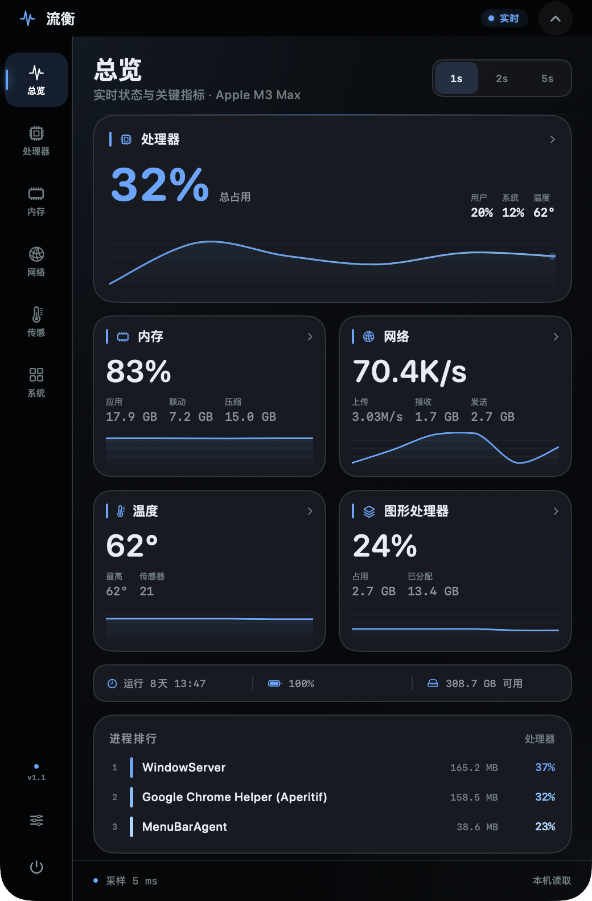

Notch-native
Compact metrics stay at menu-bar height. Click to expand the dashboard; click outside or press Esc to close.
Lumeth turns the notch into a quiet live dashboard for CPU, memory, network, temperature and everything else your Mac is doing.

Compact metrics stay at menu-bar height. Click to expand the dashboard; click outside or press Esc to close.
No analytics, no network requests, no privileged helper. System counters and sensors are read on-device.
English, Simplified and Traditional Chinese, Japanese, Korean, French, German, Spanish, and more.